Hướng dẫn cách tính giá thành theo phương pháp giản đơn trên phần mềm Misa theo Thông tư 133/2016/TT-BTC
I. Tổng quan về cách tính giá thành theo phương pháp giản đơn trên Misa theo Thông tư 133/2016/TT-BTC
1. Điều kiện áp dụng tính giá thành theo phương pháp giản đơn
- Áp dụng với doanh nghiệp có quy trình công nghệ sản xuất liên tục, khép kín, kết thúc quy trình tạo ra 1 sản phẩm, đối tượng tập hợp chi phí là toàn bộ quy trình sản xuất sản phẩm, đối tượng tính giá thành là sản phẩm hoàn thành của quy trình sản xuất đó. Ví dụ: Doanh nghiệp sản xuất bê tông, cọc bê tông, tấm cách nhiệt, bao bì xốp…
2. Các bước tính giá thành theo phương pháp giản đơn trên Misa theo Thông tư 133/2016/TT-BTC
- Bước 1: Khai báo nguyên vật liệu sản xuất và thành phẩm
- Bước 2: Khai báo đối tượng tập hợp chi phí
- Bước 3: Xuất kho nguyên vật liệu sản xuất
- Bước 4: Hạch toán các chi phí phát sinh
- Bước 5: Nhập kho thành phẩm sản xuất
- Bước 6: Xác định kỳ tính giá thành
- Bước 7: Tính giá thành thành phẩm
II. Chi tiết từng bước tính giá thành theo phương pháp giản đơn trên Misa theo Thông Tư 133/2016/TT-BTC
Bước 1: Khai báo nguyên vật liệu sản xuất và thành phẩm
- Vào "Danh mục" => Chọn "Vật tư hàng hoá" => Chọn "Vật tư hàng hoá" => Chọn chức năng "Thêm".
- Khai báo nguyên vật liệu hoặc thành phẩm:
- Vào "Danh mục" => Chọn "Vật tư hàng hoá" => Chọn "Vật tư hàng hoá" => Chọn chức năng "Thêm".
- Khai báo nguyên vật liệu hoặc thành phẩm:
+ Nếu khai báo nguyên vật liệu, các bạn sẽ chọn tính chất là "Vật tư hàng hoá".
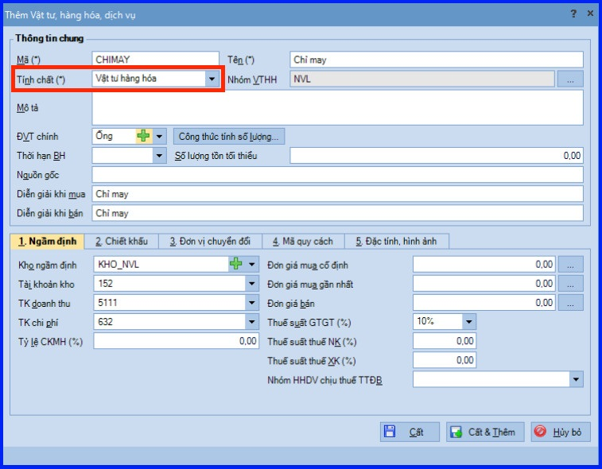
+ Nếu khai báo thành phẩm, các bạn sẽ chọn tính chất là "Thành phẩm".
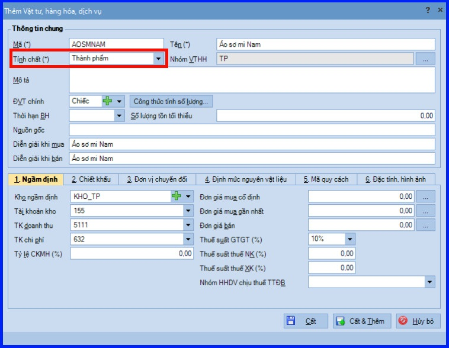
CHÚ Ý: Khi khai báo thành phẩm, các bạn thực hiện khai báo thêm định mức nguyên vật liệu sử dụng để sản xuất ra thành phẩm bên tab "Định mức nguyên vật liệu".
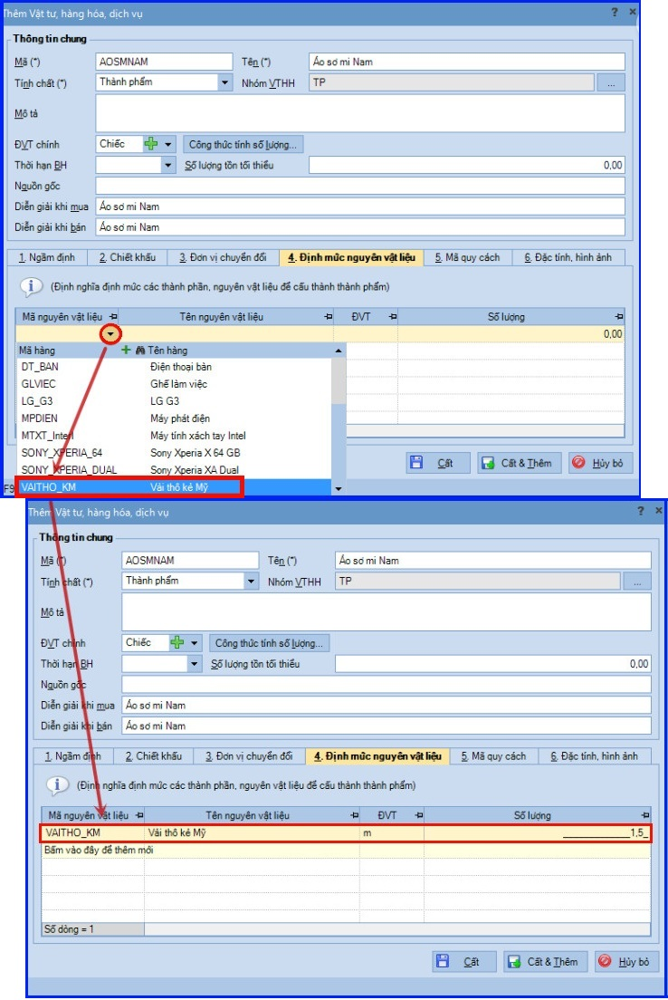
- Sau khi khai báo xong, các bạn ấn "Cất".
Bước 2: Khai báo đối tượng tập hợp chi phí
- Vào "Danh mục" => Chọn "Đối tượng tập hợp chi phí" => Chọn chức năng "Thêm".
- Chọn loại đối tượng tập hợp chi phí là "Sản phẩm".
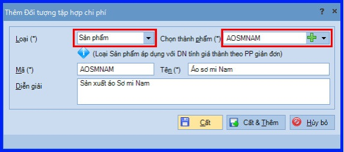
- Sau khi chọn xong, các bạn ấn "Cất".
CHÚ Ý: Với phương pháp giản đơn, mỗi đối tượng tập hợp chi phí sẽ tương ứng với một thành phẩm cần sản xuất ra.
Bước 3: Xuất kho nguyên vật liệu sản xuất
- Vào phân hệ "Kho" => Chọn tab "Lệnh sản xuất" => Chọn chức năng "Thêm".
- Các bạn tiến hành khai báo lệnh sản xuất.
- Chọn các thành phẩm và nhập số lượng cần sản xuất => hệ thống sẽ tự động tính ra số lượng Nguyên Vật Liệu cần để sản xuất căn cứ vào thông tin định mức Nguyên Vật Liệu đã được thiết lập ở Bước 1 kể trên.
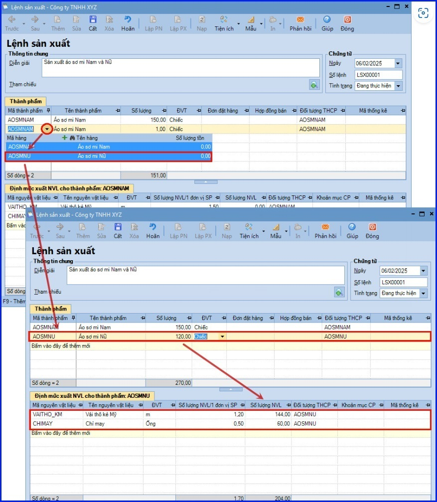
- Các bạn ấn "Cất".
- Chọn chức năng "Lập phiếu xuất" trên lệnh sản xuất.
- Các bạn tích chọn các thành phẩm cần xuất Nguyên Vật Liệu => nhấn "Đồng ý".
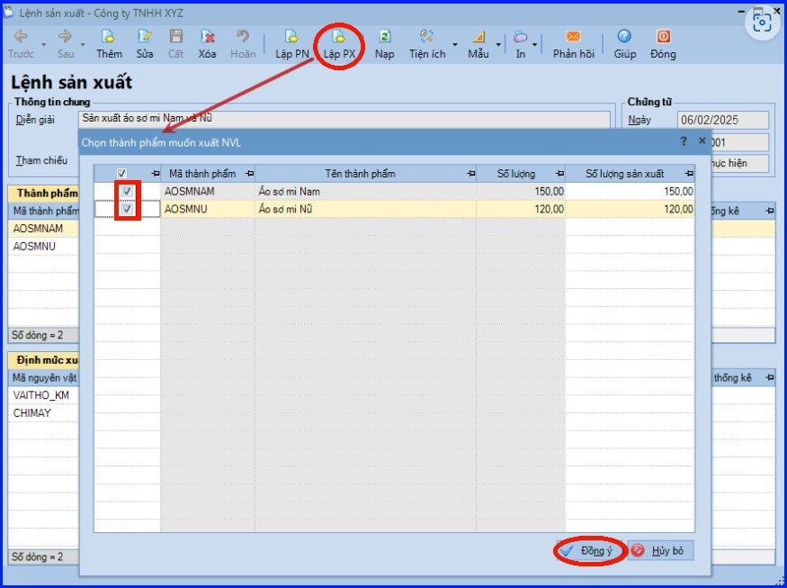
- Nhập bổ sung các thông tin còn thiếu cho chứng từ xuất kho như lý do xuất, kèm theo, tài khoản Nợ,…
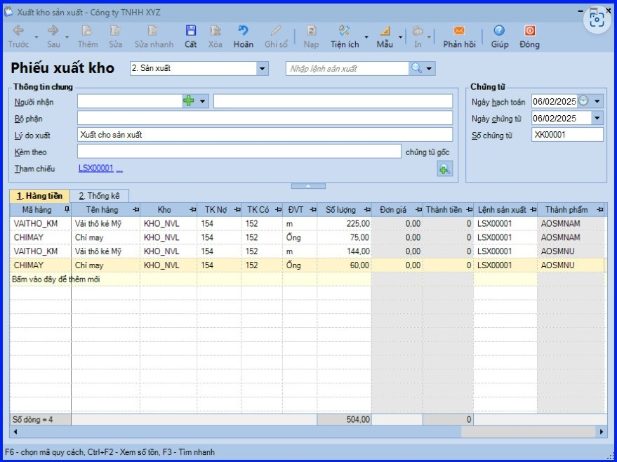
- Chọn thông tin "Khoản mục CP" (khoản mục chi phí) trong tab "Thống kê".
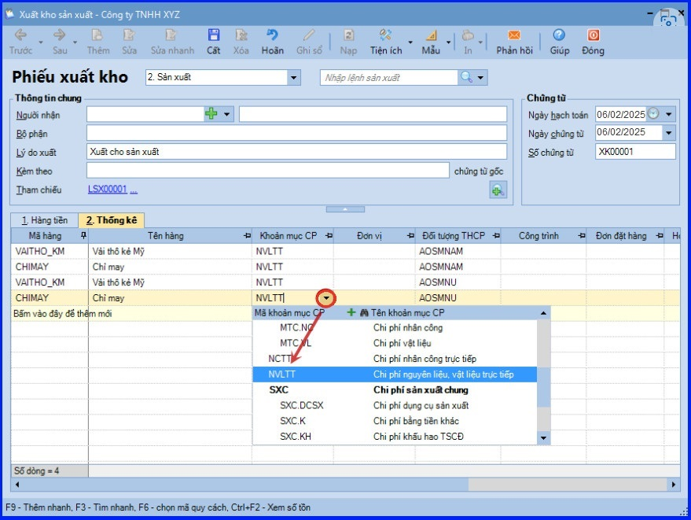
- Các bạn ấn "Cất"
CHÚ Ý:
- Với các nguyên vật liệu tính giá xuất kho theo phương pháp "Bình quân cuối kỳ" => đơn giá sẽ được hệ tự động tính sau khi thực hiện chức năng Tính giá xuất kho trên phân hệ "Kho".
-
Với các nguyên vật liệu tính giá xuất kho theo phương pháp "Bình quân tức thời", "Giá đích danh" và "Nhập trước xuất trước" => đơn giá sẽ được hệ thống tự động tính sau khi chứng từ xuất kho được "Ghi sổ".
-
Với những doanh nghiệp không quản lý lệnh sản xuất có thể bỏ qua bước này và vào phân hệ "Kho" => tab "Nhập, xuất kho" để lập chứng từ xuất kho sản xuất.
Bước 4: Hạch toán các chi phí phát sinh
- Các chi phí phát sinh liên quan đến việc tính giá thành (Nợ TK 154) có thể được hạch toán trên phân hệ "Quỹ", "Ngân hàng" hoặc "Tổng hợp".
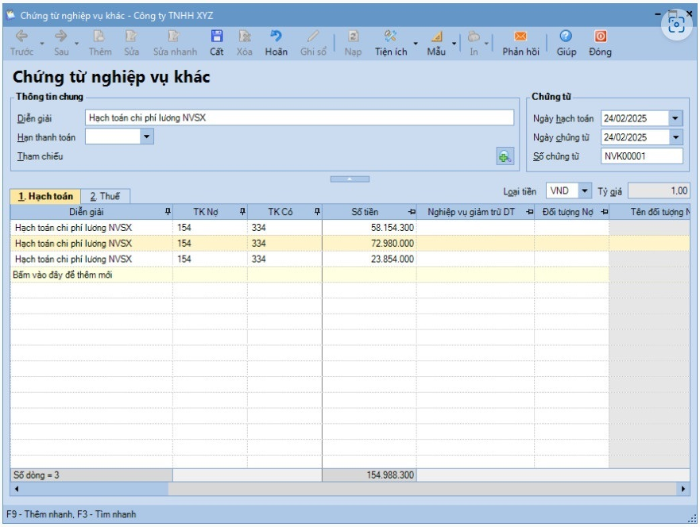
CHÚ Ý:
- Khi thực hiện tính giá thành theo Thông tư 133/2016/TT-BTC, bắt buộc phải chọn thông tin về "Khoản mục CP" (Khoản mục chi phí). Riêng thông tin về "Đối tượng THCP" (Đối tượng tập hợp chi phí), sẽ "chọn" nếu xác định được là chi phí phát sinh cho đối tượng nào và "bỏ trống" nếu chưa xác định được đối tượng.
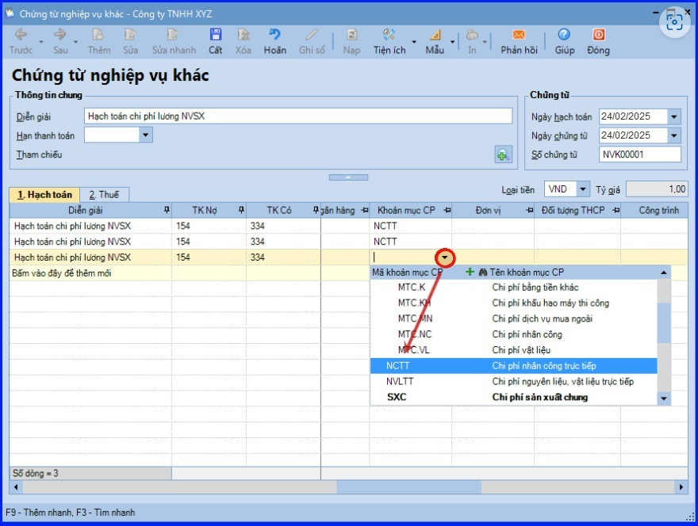
-
Khoản mục "Chi phí sử dụng máy thi công" chỉ được áp dụng đối với những doanh nghiệp trong lĩnh vực xây dựng, những doanh nghiệp có lĩnh vực hoạt động khác thì không chọn khoản mục chi phí này.
Bước 5: Nhập kho thành phẩm sản xuất
- Vào phân hệ "Kho" => Chọn tab "Nhập, xuất kho" => Chọn chức năng "Thêm\Nhập kho".
- Chọn loại chứng từ là "Thành phẩm sản xuất".
- Khai báo thành phẩm được nhập kho.
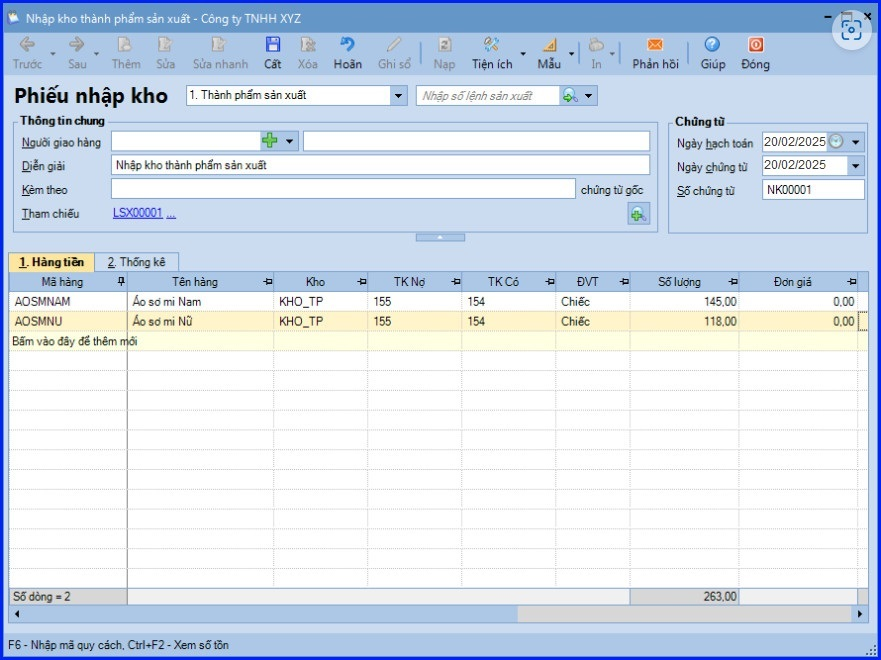
- Khai báo hoặc chọn lại "Đối tượng THCP" (Đối tượng tập hợp chi phí) theo thực tế phát sinh.
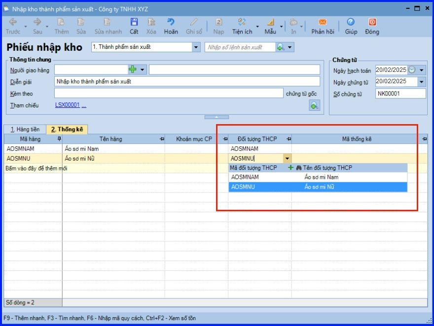
- Các bạn ấn "Cất".
CHÚ Ý:
- Đơn giá của thành phẩm nhập kho sẽ được hệ thống cập nhật sau khi thực hiện chức năng "Cập nhật giá nhập kho" khi thực hiện "Tính giá thành tại Bước 7".
Bước 6: Xác định kỳ tính giá thành
- Vào phân hệ "Giá thành" => Chọn tab "Sản xuất liên tục – Giản đơn" => Chọn chức năng "Thêm".
- Chọn kỳ tính giá thành và ấn nút "Lấy dữ liệu" => phần mềm sẽ tự động lấy lên những đối tượng tập hợp chi phí phát sinh trong kỳ đã khai báo.
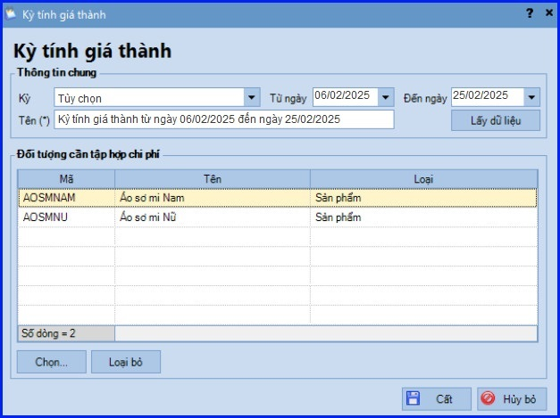
- Các bạn ấn "Cất".
CHÚ Ý:
- Sử dụng chức năng "Chọn/Loại bỏ" để chọn bổ sung hoặc xóa các đối tượng tập hợp chi phí trên danh sách.
Bước 7: Tính giá thành thành phẩm
- Vào phân hệ "Giá thành" => Chọn tab "Sản xuất liên tục – Giản đơn".
- Chọn kỳ tính giá thành trên danh sách và chọn chức năng "Tính giá thành" bên thanh tác nghiệp (hoặc nhấn chuột phải, chọn chức năng "Tính giá thành").
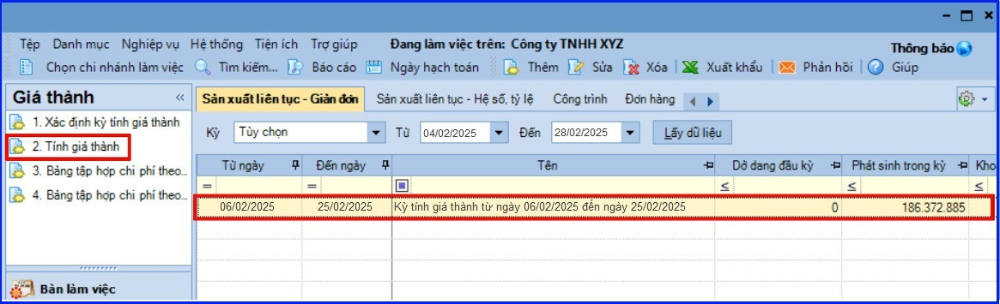
- Các bạn ấn "Đồng ý".
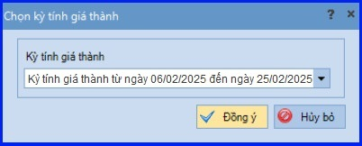
- Việc tính giá thành theo phương pháp giản đơn sẽ được thực hiện theo 3 phần như sau:
+ Phần 1 - Phân bổ chi phí chung: hệ thống sẽ tổng hợp các chứng từ xuất kho Nguyên Vật Liệu, hạch toán chi phí lương, chi phí sản xuất chung có hạch toán Nợ TK 154, chọn "Khoản mục CP" (khoản mục chi phí) nhưng chưa chọn "Đối tượng THCP" (đối tượng tập hợp chi phí) để thực hiện việc phân bổ:
- Nhập tỷ lệ phân bổ và lựa chọn tiêu thức phân bổ.
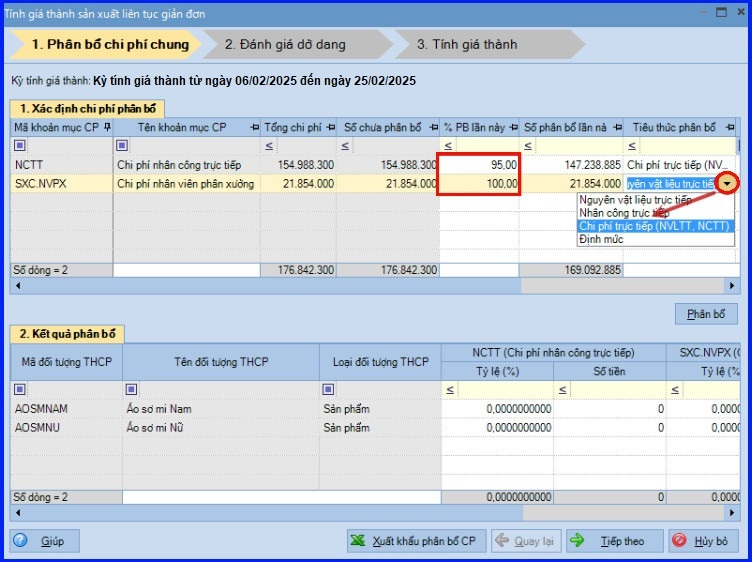
- Ấn "Phân bổ" => hệ thống sẽ tự động phân bổ chi phí theo từng đối tượng tập hợp chi phí trong kỳ tính giá thành.
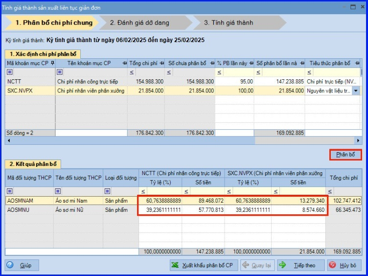
CHÚ Ý:
-
Có thể kiểm tra danh sách chứng được tổng hợp để phân bổ chi phí chung bằng cách sử dụng chức năng "Xem" tại cột "Chi tiết chứng từ" trên tab "Xác định chi phí phân bổ".
- Để phân bổ được chi phí chung theo "Định mức", cần khai báo định mức chi phí cho từng đối tượng THCP trên menu "Nghiệp vụ" => chọn "Giá thành" => chọn "Sản xuất liên tục – giản đơn" => chọn "Khai báo định mức phân bổ chi phí theo đối tượng THCP".
- Sau khi tính giá thành xong, có thể kiểm tra thông tin chi phí chung được phân bổ trên tab "Bảng phân bổ chi phí chung" của màn hình danh sách kỳ tính giá thành.
- Ấn "Tiếp theo" để chuyển sang phần "Đánh giá dở dang".
+ Phần 2 - Đánh giá dở dang: trường hợp kết thúc kỳ tính giá thành vẫn còn có các thành phẩm chưa sản xuất xong, kế toán cần xác định giá trị dở dang cuối kỳ cho từng đối tượng tập hợp chi phí:
- Lựa chọn tiêu thức đánh giá dở dang và nhập số lượng dở dang kèm tỷ lệ hoàn thành của các thành phẩm dở dang.
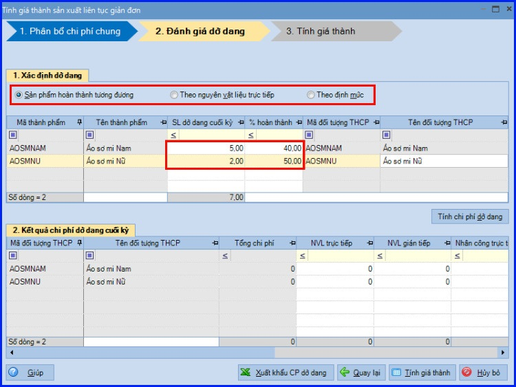
- Ấn "Tính chi phí dở dang" => hệ thống sẽ tự động xác định chi phí dở dang cho từng đối tượng tập hợp chi phí.
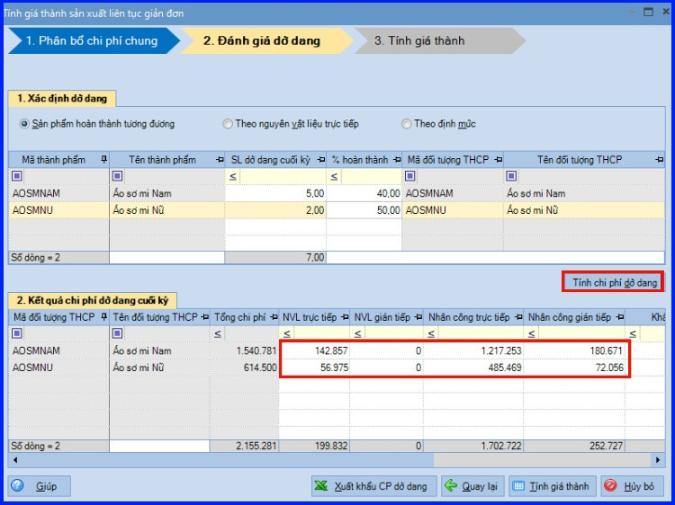
CHÚ Ý:
- Để đánh giá được chi phí dở dang cuối kỳ theo "Định mức", kế toán cần vào menu "Nghiệp vụ" => chọn "Giá thành" => chọn "Sản xuất liên tục giản đơn" => chọn "Khai báo định mức giá thành thành phẩm" để khai báo định mức chi phí cho từng thành phẩm.
- Sau khi tính giá thành xong, có thể kiểm tra thông tin dở dang cuối kỳ thông qua Bảng tập hợp chi phí theo yếu tố hoặc Bảng tập hợp chi phí theo khoản mục (chức năng chuột phải tại màn hình danh sách kỳ tính giá thành).
- Ấn "Tính giá thành" để chuyển sang phần tiếp theo "Tính giá thành".
+ Phần 3 - Tính giá thành: hệ thống tự động tính ra giá thành cho từng đối tượng tập hợp chi phí.
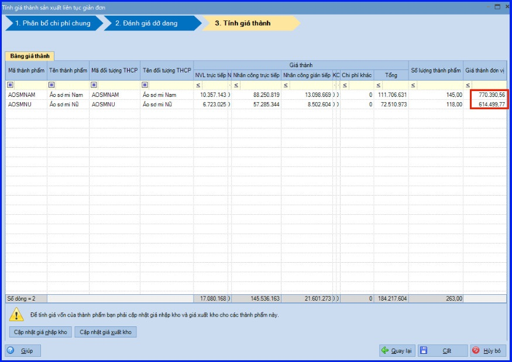
Sau khi thực hiện tính giá thành xong, nếu chọn:
+ "Cập nhật giá nhập kho" => hệ thống sẽ cập nhật giá thành vừa tính được vào chứng từ nhập kho thành phẩm ở Bước 5 kể trên.
+ "Cập nhật giá xuất kho" => hệ thống sẽ tính ra giá cho các thành phẩm khi xuất kho.
- Các bạn ấn "Cất".
CHÚ Ý:
- Sau khi tính giá thành xong => có thể kiểm tra lại giá thành của từng thành phẩm trên tab "Bảng tính giá thành" của màn hình danh sách kỳ tính giá thành.
- Trường hợp muốn kiểm tra lại các khoản chi phí trực tiếp, phục vụ cho việc tính giá thành hoặc các khoản chi phí làm giảm giá thành của thành phẩm, kế toán nhấn chuột phải tại màn hình danh sách kỳ tính giá thành và chọn chức năng "Tập hợp chi phí trực tiếp hoặc Tập hợp khoản giảm giá thành".
=============================
Nếu bạn muốn thành thạo các kỹ năng làm kế toán trên phần mềm Misa
Thì bạn có thể tham khảo "Khóa Học Thực Hành Kế Toán Trên Phần Mềm Misa" tại Công ty đào tạo Kế Toán Diệu Tâm
Trong khóa học này, bạn sẽ được dạy cách lên sổ sách, lập báo cáo tài chính trên phần mềm Misa
Chi tiết về chương trình đào tạo bạn xem tại đây nhé: Khóa học thực hành kế toán trên Misa
=============================
Thì bạn có thể tham khảo "Khóa Học Thực Hành Kế Toán Trên Phần Mềm Misa" tại Công ty đào tạo Kế Toán Diệu Tâm
Trong khóa học này, bạn sẽ được dạy cách lên sổ sách, lập báo cáo tài chính trên phần mềm Misa
Chi tiết về chương trình đào tạo bạn xem tại đây nhé: Khóa học thực hành kế toán trên Misa
=============================